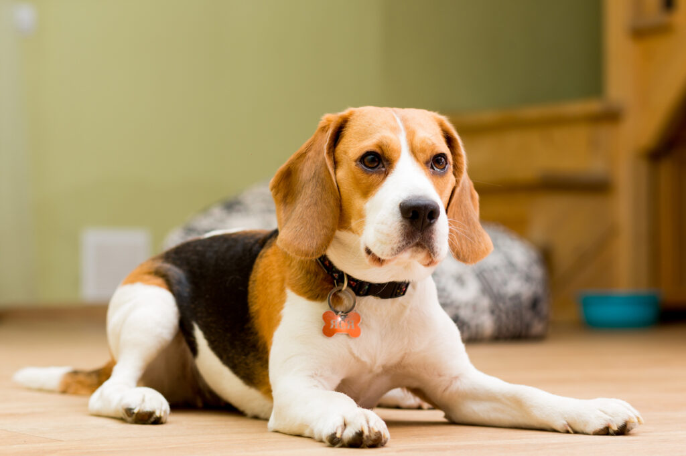

Beagle
Weight: 9-17kg
The beagle is a breed of small scent hound.
The beagle is a breed of small scent hound, similar in appearance to the much larger foxhound. The beagle was developed primarily for hunting hare (beagling). Possessing a great sense of smell and superior tracking instincts, the beagle is the primary breed used as a detection dog for prohibited agricultural imports and foodstuffs in quarantine around the world. The beagle is intelligent. It is a popular pet due to its size, good temper, and a lack of inherited health problems.